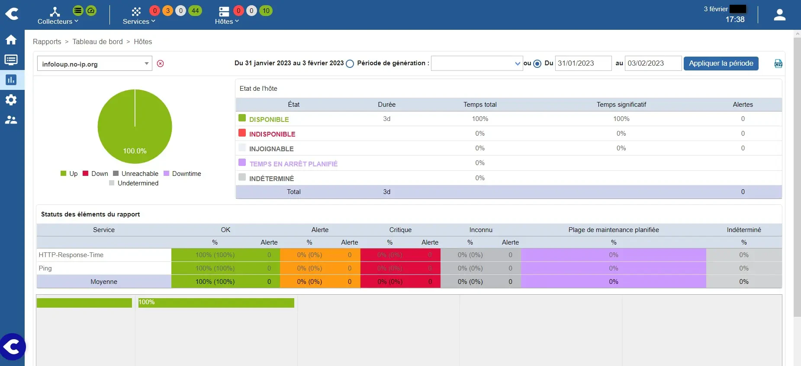

Centreon / Debian 12 : 1/6 à 6/6

Centreon IT 100 - Partie 1
Le mémento concerne Centreon 25.10 sous Debian ≥ 12.13.
Installation de Centreon
Centreon pourra superviser les PC de votre réseau local ainsi que les VM de votre réseau virtuel.
Son installation à réaliser de préférence sur l'un des serveurs de votre réseau local disposant de VirtualBox se fera à l'intérieur d'une VM Debian 12.
- Création de la VM Debian 12
Aidez-vous de ce mémento Debian 12/13 pour créer votre VM Debian 12 avec un bureau Xfce et une IP fixe.
Affectez ces valeurs lors de la création de la VM :
- Nom -> vm-centreon
- Taille de la mémoire -> 2048 Mo
- Emplacement du fichier et taille -> 20 Go
- Processeur -> 2 CPU
- Mode d'accès réseau -> Accès par pont (carte 1)
Affectez celles-ci lors de l'installation de l'OS Debian :